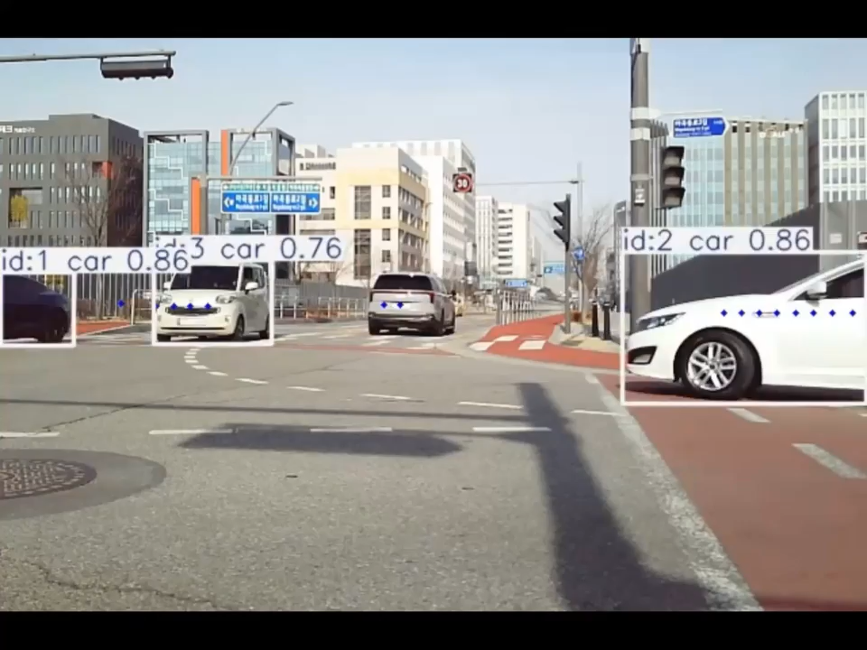
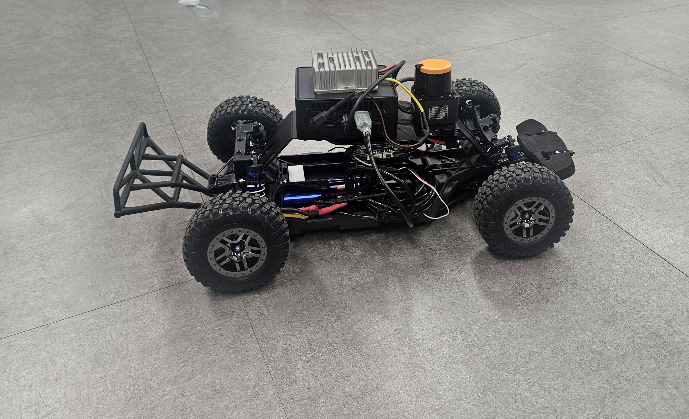
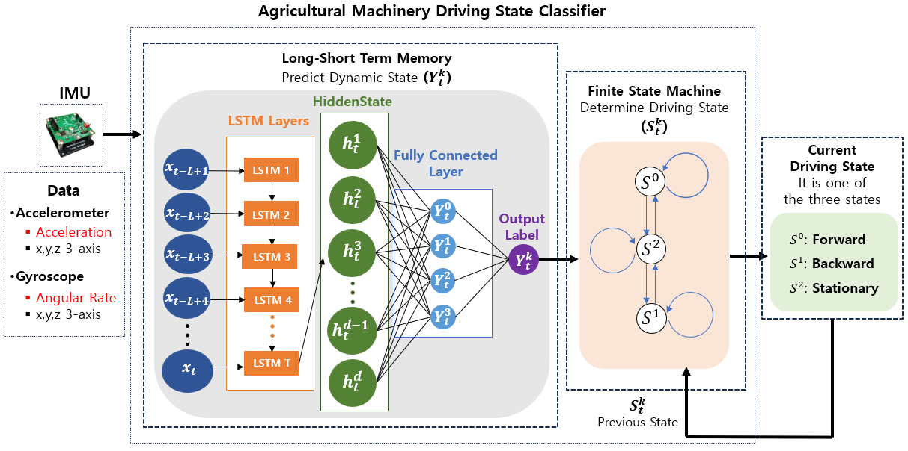

센서융합 및 상태 추정
카메라와 라이다를 융합해 차량 상태를 연속 추정하고, IMU 기반으로 전진, 후진, 정지의 주행 상태를 판별했습니다.
- 카메라와 라이다 관측 처리, IMU 주행 상태 판별
- DQN 기반 관측 후보 선택
- IMM 기반 위치, 속도, 진행방향 추정
- 가림, 센서 노이즈와 관측 품질 변화 대응
AUTONOMOUS SYSTEMS / SENSOR FUSION / EMBEDDED SOFTWARE
곽민재 전자전기공학 석사
카메라와 라이다 기반 센서융합 및 차량 상태 추정, IMU 기반 주행 상태 판별부터 자율주행 및 무인체계의 경로 계획, STM32 실시간 SW까지 설계하고 구현했습니다. 연구 알고리즘을 실차와 현장 시험, 임베디드 기기와 시뮬레이션에서 검증했습니다.
논문, 프로젝트, 실험 결과로 확인된 세 가지 축
카메라와 라이다를 융합해 차량 상태를 연속 추정하고, IMU 기반으로 전진, 후진, 정지의 주행 상태를 판별했습니다.
센서 인지 결과를 이용해 장애물을 판단하고, 회피 경로를 생성해 실제 차량과 시뮬레이션 시스템에서 검증했습니다.
센서와 구동기를 실시간 태스크로 분리하고 상태 기반 판단과 운용 화면까지 하나의 시스템으로 구현했습니다.
대표 프로젝트의 문제 정의, 설계 과정, 검증 결과와 트러블슈팅을 상세 페이지에서 확인할 수 있습니다.

가림과 관측 품질 변화에 맞춰 DQN으로 코너점 후보를 선택하고, IMM으로 차량 상태를 연속 추정했습니다.

벽과 장애물을 구분하고 Frenet 후보 경로와 FSM으로 회피를 관리했습니다. 실차 충돌 이후 추종 실패 원인도 분석했습니다.

차량 내부 신호 없이 IMU 시계열로 상태전환을 찾고, FSM으로 전진, 후진과 정지를 안정적으로 판별했습니다.
연구 주제와 기여 범위
센서융합과 자율주행 연구에서 실시간 임베디드 SW 구현까지
석사, GPA 4.29/4.5, 모빌리티 시스템 및 제어연구실
학사, 도시시스템공학 및 전자전기공학 복수전공, GPA 3.79/4.5
73학점 이수, GPA 4.31/4.5, 2019년 중앙대학교 편입
C/C++, STM32/FreeRTOS, Linux 시스템 프로그래밍, 요구사항 분석, 설계, 검증
2026.11 수료 예정학부연구생 2022.06–2023.08 → 연구조교 2023.09–2025.08
센서융합, 차량 추적, 자율주행 연구
실습 자료 재구성, 장비 및 예제 코드 사전 검증, 강의평가 1위
카메라, 라이다, 레이더, 센서융합, 경로 계획, 위치 추정, 차량 통신 및 제어
Language TOEIC 905 / OPIc IH
프로젝트에서 직접 사용한 기술만 정리했습니다. 각 기술의 대표 적용 사례를 바로 확인할 수 있습니다.
LANGUAGEPython
DQN 센서융합, ROS 2 라이다 인지와 Frenet 경로 계획, 실험 자동화에 사용했습니다.
LANGUAGEC / C++
STM32 주변장치와 RTOS 로직, ROS 2 기반 회피 판단 및 경로 계획 구현에 사용했습니다.
ENGINEERINGMATLAB / Simulink
차량 추적 시뮬레이션 환경 구축과 RANSAC, IMM, DQN 알고리즘 개발 및 성능 검증에 사용했습니다.
ROBOTICSROS / ROS 2
센서와 알고리즘을 연동하고 실차 및 시뮬레이션 시스템의 모듈 인터페이스를 구성했습니다.
EMBEDDEDSTM32 / FreeRTOS
Timer, Input Capture, PWM 기반 주변장치 제어와 태스크, 메시지 큐 구조를 직접 구성했습니다.
MOSAIC C2 시뮬레이터
MOSAIC C2 →MANTA 시뮬레이션, 계획 경로와 위협 상태 시각화
MANTA →STM32 운용 상태 및 거리 GUI
STM32 Tracking →Ubuntu 환경에서 ROS 및 ROS 2 개발환경 구성, 빌드와 실행, 로그 분석 및 실험 스크립트 운용에 사용했습니다.
기능 브랜치, Merge/Rebase, Pull Request
MANTA →